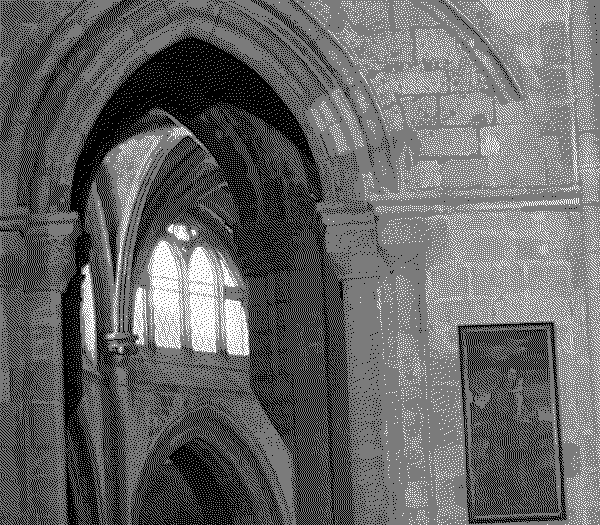
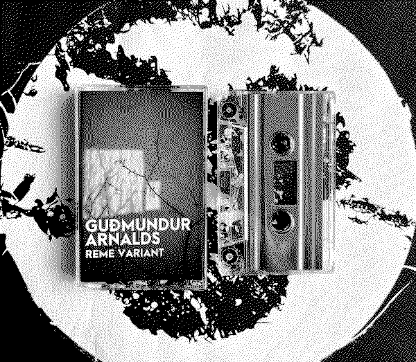
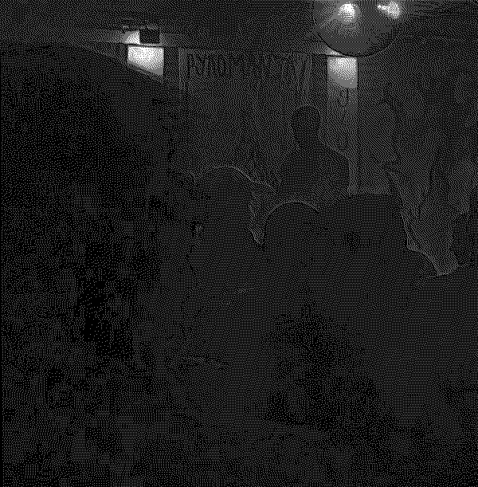

Lisbon, casette & a mix
230417
The past couple of weeks have been quite intense for me. I traveled to Lisbon for the first time to play two events organized by my friends Bart and Moss Kissing at Damas and Cosmos. The shows were polar opposites, with one being an ambient night and the other a full club event featuring great local DJs. I was completely floored by how alive the scene was and how wholesome the people were within it, I hope to return soon. It was a fun opportunity for me to create new music for the occasion, but it also had its challenges as it clashed with my final assignments for Uni. Nevertheless, I am very happy with what I came up with for both sets, and it has made me excited for more performances this summer but I played the club set when I came home at an event with in3dee and russian.girls.

Today is also a special occasion as a live set that I did at a local record shop and venue called Space Odyssey has been released on cassette in a limited run. If anyone in Reykjavík is interested, I definitely recommend checking it out. It will also be available digitally on Bandcamp soon.
Juan and I also nade a new Pellegrina mix for Skúlagata Radio on 101 recently. It was broadcasted on April 7th and was made available for streaming on SoundCloud today, it features some very interesting tracks and also a lot of unreleased music from Pellegrina and my solo work.
